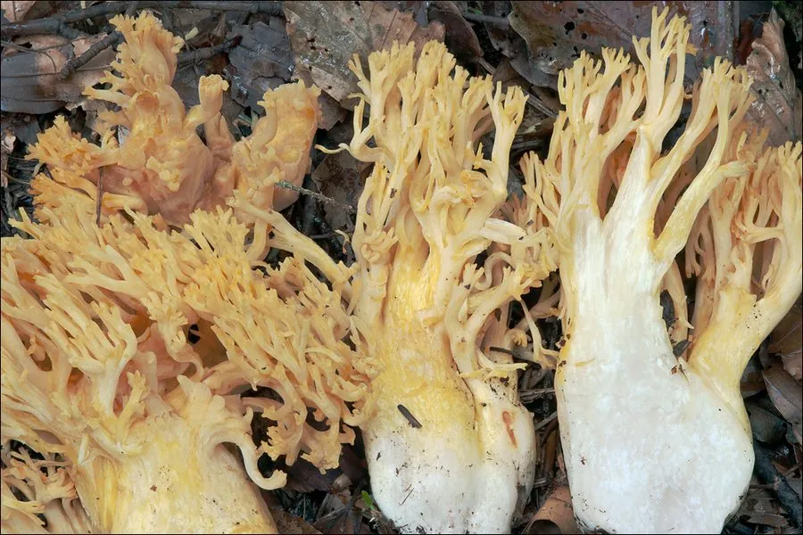

真菌 · 真菌界
金黄枝瑚菌 Ramaria aurea

枝瑚菌科大型珊瑚状菌，子实体金黄至橙黄、分枝密集，秋季生于阔叶林地上，幼嫩时可食但须煮熟。
- 分类
- 门担子菌门纲伞菌纲目钉菇目科枝瑚菌科属枝瑚菌属
- 栖息环境
- 阔叶林与针阔混交林地上，与栎类等形成外生菌根
- 地理分布
- 北半球温带阔叶林分布，中国东北、华北、西南及欧洲、北美有记录
- 保护级别
- 暂无评估；种群随老龄林减少而下降
物种志
金黄枝瑚菌的子实体高 8–15 厘米，宽 6–12 厘米，由粗壮的基部多次分枝形成密集的珊瑚状，分枝向上渐细，顶端钝或分叉，通体金黄、橙黄至淡黄褐色，伤后或成熟时略带褐色。菌肉白色至淡黄，质地脆。孢子印淡黄至赭黄色，孢子长椭圆形，表面有纵纹。
金黄枝瑚菌生于阔叶林或针阔混交林地上，多与栎、山毛榉等树木形成外生菌根，秋季 8–10 月发生，喜湿润、酸性至中性土壤。幼嫩时肉质脆嫩、可食，但必须煮熟，且不宜大量食用，因为枝瑚菌属中部分种类（如粉红枝瑚菌的某些型）可引起严重胃肠炎。采食时需与颜色相近的有毒种类区分，并注意其基部是否带苦味；老熟个体质地变韧、风味下降。
形态与习性
- 子实体高 8–15 厘米，珊瑚状分枝密集，金黄至橙黄
- 菌肉白色至淡黄，质地脆嫩
- 孢子印淡黄至赭黄色，孢子有纵纹
- 生境阔叶林地上，秋季 8–10 月发生
- 食用性幼嫩时可食，须煮熟，不宜大量食用
- 毒性同属部分种类可致严重胃肠炎，须谨慎辨识
趣味知识
- 枝瑚菌属外形像海底珊瑚，但其中既有美味也有能让人剧烈腹泻的种类。
- 金黄枝瑚菌的孢子印是淡黄色，而许多有毒枝瑚菌的孢子印偏赭褐，可作为参考。
- 采食珊瑚菌应选分枝密集、颜色鲜艳的幼嫩个体，老熟后质地如柴。
- 它依赖栎类等树木共生，老龄阔叶林减少会直接导致其种群衰退。